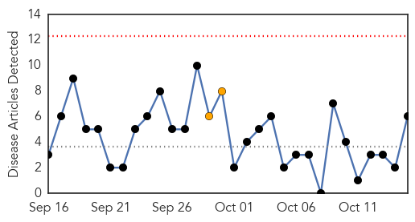
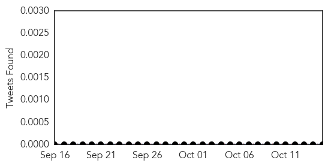

30 Day Trends
Web: 0 alerts, 2 warnings
Twitter: 0 alerts, 0 warnings
Top Articles:
- 0.994
- Mosquito-Borne Chikungunya Virus Likely to Reach Mexico: Health Ministry
- 0.994
- Mosquito-borne Chikungunya virus likely to reach Mexico- health ministry
- 0.993
- Mosquito-borne Chikungunya virus likely to reach Mexico- health ministry
- 0.866
- Jamaican PM calls for combating Chikungunya virus
- 0.635
- KSAC to Deploy Volunteers in Education Drive Against CHIK-V
- 0.592
- Jamaica reports chikungunya related death in college student, Health Minister Ferguson wants to be infected
Top Tweets:
-
No tweets found for Oct 15, 2014
Web/News Articles
Tweets
Article Locations